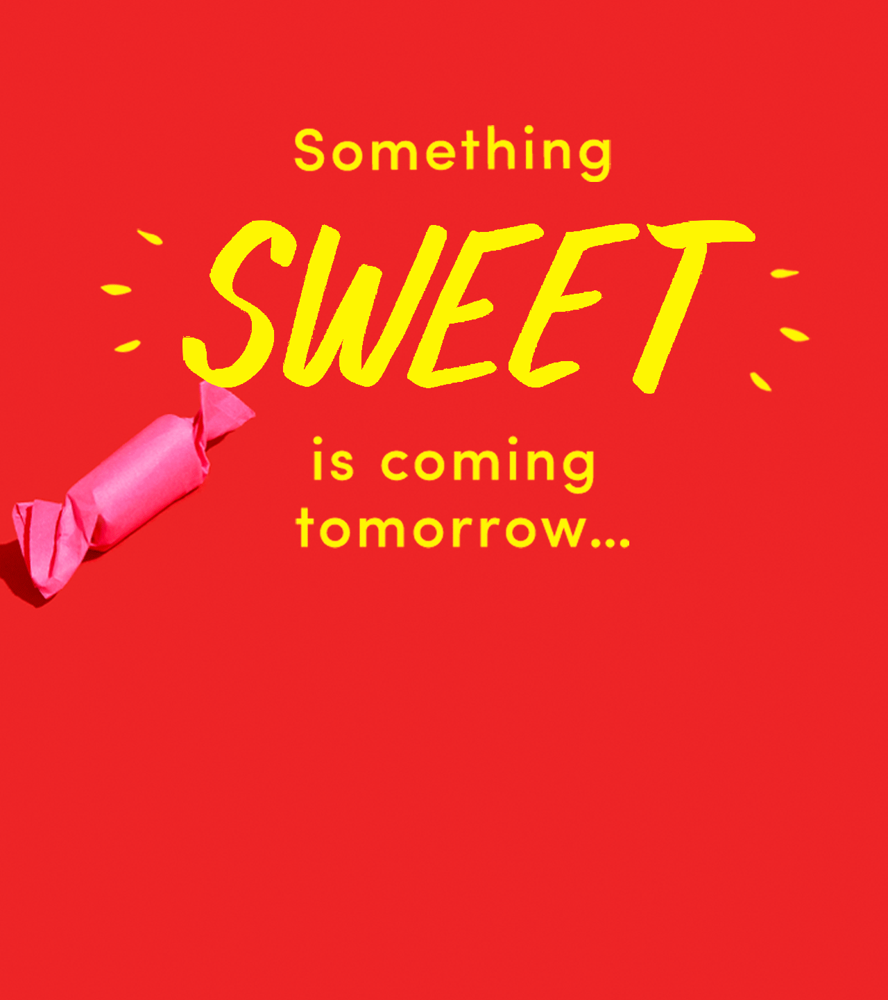
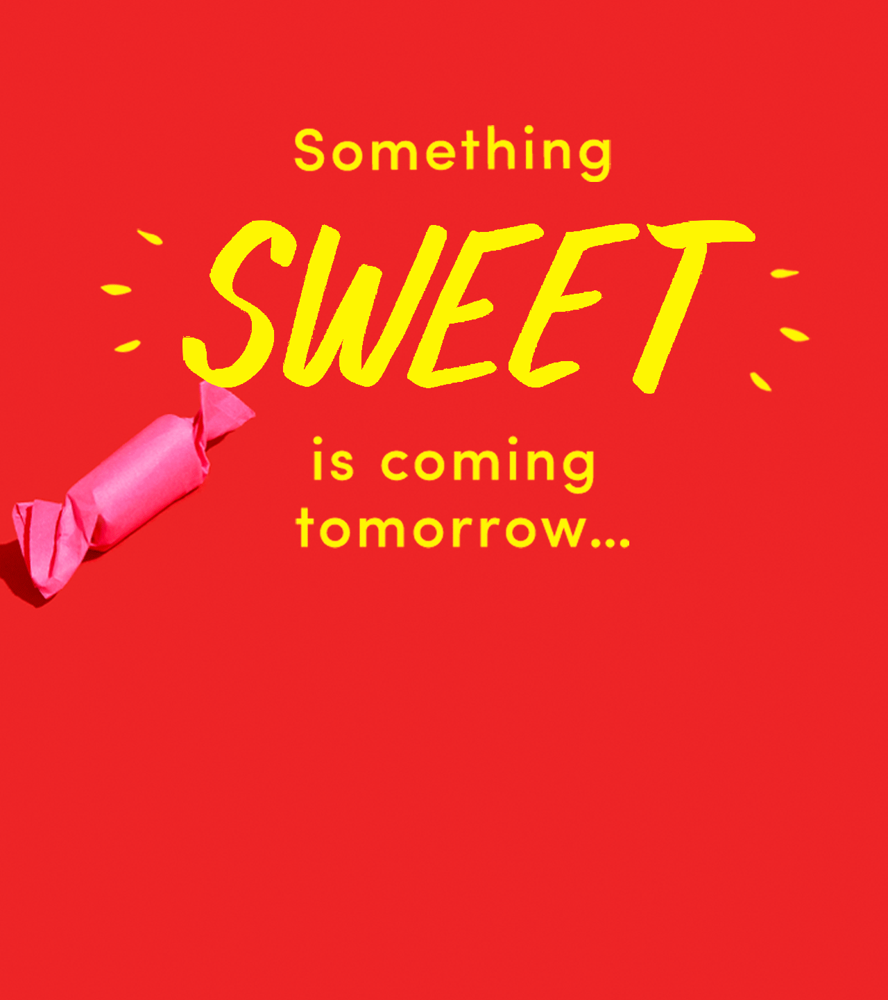
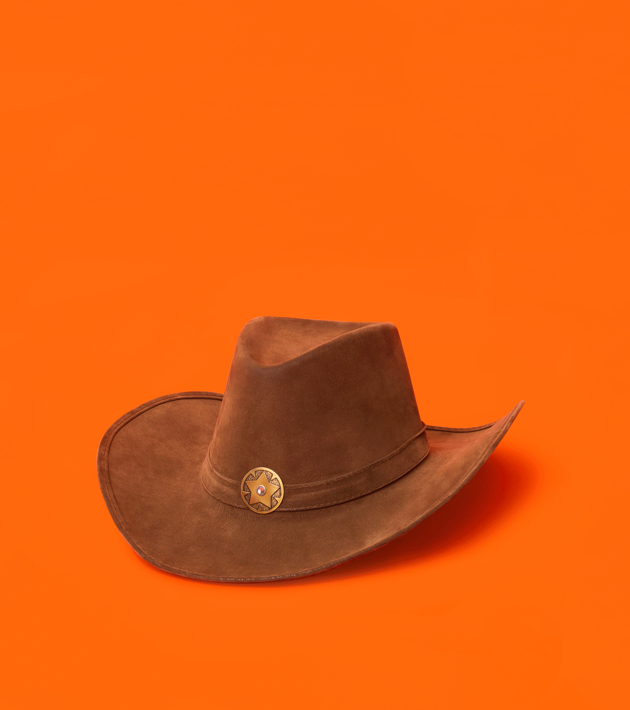
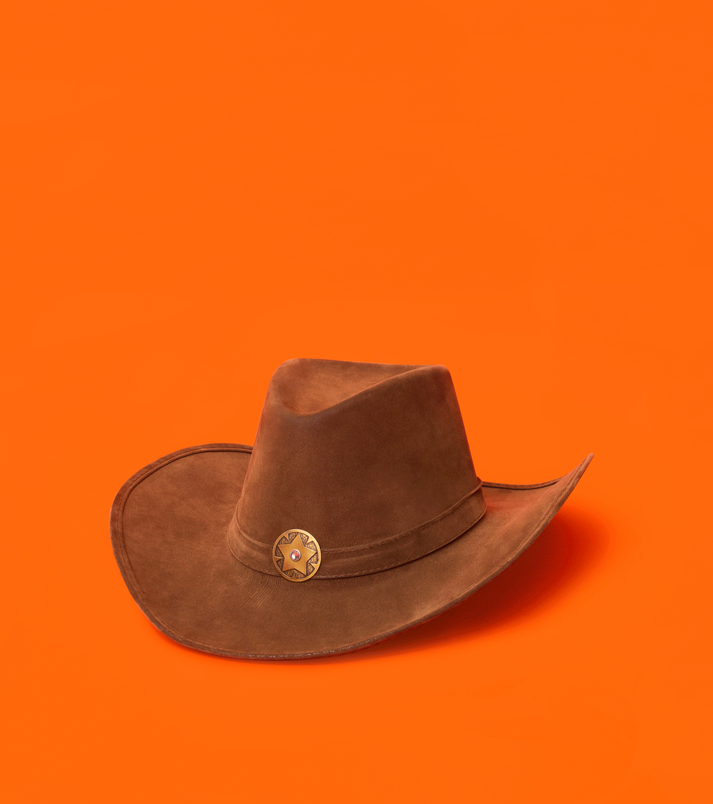

* // Stills
Responsible for marketing materials,
including social media and promotional email assets.
Monthly web updates, site section redesigns and digital ad units.
Helped redesign franchise programs and special projects,
such as J. Crew Credit Card, Factory First, and the College Ambassador Program.


 



 
